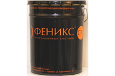
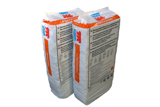

PROMAT
PROMAT - эксперт в области огнезащиты и высокотемпературной изоляции
Огнезащитные материалы и технологии
Promat - крупнейший мировой производитель огнезащитных материалов и высокотемпературной изоляции. Мы испытали и сертифицировали сотни противопожарных конструкций и систем.
Наше КРЕДО - высочайшее качество продукции, постоянное развитие и совершенствование технологий, лучшие технические решения, гарантирующие БЕЗОПАСНОСТЬ бизнесу наших клиентов.
Нами успешно реализовано уже более 100 проектов на объектах гражданского строительства, 5 атомных станций, 5 нефтеперерабатывающих комплексов, 20 промышленных предприятий и это только в России. Promat - это тысячи проектов противопожарной безопасности по всему миру в гражданском и промышленном строительстве, нефтехимической, газовой, атомной отраслях и энергетике.
Мы постоянно развиваемся, разрабатываем новые самые прогрессивные технические решения и не собираемся останавливаться на достигнутом.
|
Огнезащитные составы и краски Огнезащитные тонкослойные покрытия Promat- это инновационные огнезащитные составы, производимые локально на территории России с соблюдением всех европейских и российских стандартов качества.
Огнезащитная краска Противопожарная огнезащитная краска является надежным средством для профилактики и защиты всех видов строительных конструкций от пожара. Компания Promat предлагает доступные по цене тонкослойные терморасширяющиеся покрытия для обработки конструкций из металла, бетона и дерева, выпускаемые по инновационной технологии на территории России. Огнезащитные составы марки «Феникс®» вспучиваются под воздействием пламени и высоких температур, образуя на поверхности стабильный пенококсовый слой низкой теплопроводности, который предотвращает нагрев и возгорание конструкции. Виды продукции Компания Promat предоставляет возможность купить огнезащитную краску для конструкций из разных материалов, выбрав состав по характеристикам и назначению. Для дерева. Краски для обработки изделий из древесины представлены продуктами «Феникс®» ДП и «Феникс®» ДБ. Огнезащитные составы данных серий изготавливаются на основе воды и различных добавок, являются экологичными. Их нанесение на конструкции может осуществляться ручным или механизированным способом. Огнезащитная краска «Феникс®ДП» после высыхания образует прозрачный слой, а «Феникс® ДБ» - матовую пленку белого цвета. Продукт может использоваться в помещениях с высокими эстетичными требованиями. Также огнезащитные краски подходят для обработки изделий I группы по классам К0 (30) и К0 (45). Для металлоконструкций. Противопожарное покрытие стальных конструкций создают огнезащитные краски «Феникс®» СТС и «Феникс®» СТВ. Они представляют собой вязкую жидкость, которая после высыхания образует белое матовое покрытие, стойкое к температурному воздействию в широком диапазоне. Огнезащитный состав «Феникс®» СТС создан на базе растворителя, а «Феникс®» СТВ - на водной основе. Оба обладают хорошей адгезией к металлам, совместимы с большинством грунтовок. Их можно использовать для обработки стен, потолков и прочих конструкций на заводах, в цехах, а также непосредственно на стройплощадках. Преимущества огнезащитных красок Promat
|
|
|
Огнезащитный состав ФЕНИКС® СТС |
«ФЕНИКС® СТС» - огнезащитный терморасширяющийся состав для металлоконструкций на основе органического растворителя. ТУ 5768-005-66959951-2011 |
|
Огнезащитный состав ФЕНИКС® СТВ |
ФЕНИКС® СТВ - однокомпонентный огнезащитный состав на водной основе. Состав предназначен для обеспечения пределов огнестойкости несущих стальных строительных конструкций от R15 до R120 в соответствии с ГОСТ 30247.1 «Конструкции строительные. Методы испытаний на огнестойкость. Несущие и ограждающие конструкции». |
|
Огнезащитный состав ФЕНИКС® ДБ |
ФЕНИКС® ДБ - однокомпонентный огнезащитный состав на водной основе. Состав предназначен для огнезащиты конструкций из древесины и материалов на ее основе в зданиях общественного, жилого и промышленного назначения и обеспечения I-ой группы огнезащитной эффективности деревянных конструкций по ГОСТ Р 53292 «Огнезащитные составы и вещества для древесины и материалов на ее основе. Общие требования. Методы испытаний». |
|
Огнезащитный состав ФЕНИКС® ДП |
Огнезащитное покрытие на основе состава «ФЕНИКС® ДП» представляет собой двухкомпонентную систему, состоящую из покрытия на основе огнезащитного состава «ФЕНИКС® ДП» и слоя покрытия на основе защитного состава «ФЕНИКС®ДП ТОП». Двухкомпонентное покрытие предназначено для огнезащиты конструкций из древесины и материалов на ее основе в зданиях общественного, жилого и промышленного назначения. |
|
Огнезащитный состав ФЕНИКС® СЕ |
ФЕНИКС® СЕ - однокомпонентный огнезащитный состав на водной основе. остав применяется для пассивной защиты от возгораний и пожара кабельных линий, проложенных одиночно или в пучках проводов независимо от номинального напряжения и назначения (силовых, кабелей связи, электронных путей, внутренних кабельных трасс и т. д.), имеющих электроизоляционную оболочку из поливинилхлорида, полиэтилена, резины и др. |
|
Огнезащитные штукатурные покрытия Использование современных огнезащитных штукатурок относится к одному из наиболее эффективных средств, способных предотвратить распространение пожара и защитить несущие конструкции от температурных деформаций. Компания Promat предлагает инновационные составы, позволяющие в значительной степени повысить предел огнестойкости несущих конструкций, а также вентиляционных систем и кабельных трасс. Благодаря специальным добавкам огнезащитные штукатурки предотвращают нагревание обработанной конструкции, исключая ее повреждение огнем. Применение огнезащитных штукатурок Необходимость применения огнезащитных штукатурных составов обусловлена Правилами пожарной безопасности. Выпускаемые компанией Promat продукты охватывают широкую сферу применения, поскольку могут использоваться для повышения огнестойкости различных конструкций. Металлические и железобетонные конструкции. Штукатуркой покрываются несущие конструкции из стали и армированного бетона. Также такой состав можно использовать для огнезащитной обработки ограждающих и прочих элементов из металла и железобетона. Плиты перекрытия и несущие стены. Огнестойкие составы могут применяться сплошного оштукатуривания стен и потолков в помещениях, коридорах, на путях эвакуации и в прочих местах, а также для заделки швов между плитами перекрытия. Вентиляционные и кабельные каналы. С помощью штукатурных составов можно повысить огнестойкость воздуховодов противодымной, вытяжной или аварийной вентиляции. Также они подходят для обработки газоходов, кабельных каналов и прочих элементов. Виды огнезащитных штукатурок Promat Компания Promat предлагает различные виды огнезащитных штукатурок, отличающихся составом, характеристиками и назначением. Fendolite® MII - сухая смесь из портландцемента, вспученного вермикулита и различных добавок, предназначенная для огнезащиты конструкций из стали и железобетона на предприятиях нефтегазовой и химической промышленности, а также в гражданском строительстве и тоннелях. Состав повышает предел огнестойкости обработанного материала до 240 мин. Fibrogaine® - сухая смесь из портландцемента, минеральных волокон (каменной ваты) и специальных добавок, созданная для обработки транзитных воздуховодов систем вентиляции и кондиционирования, газоходов и прочих технологических каналов. Применение данного состава позволяет увеличить предел огнестойкости конструкции до 30-240 минут. «Неоспрей» - сухая смесь, созданная на основе смешивания портландцемента и вспученного вермикулита. Огнестойкий состав может использоваться для защиты несущих и ограждающих конструкций на гражданских и промышленных объектах. Материал позволяет увеличить стойкость стального или железобетонного элемента до 240 минут. |
|
|
НЕОСПРЕЙ NEOSPRAY |
Огнезащитная штукатурка НЕОСПРЕЙ представляет собой состав в виде сухой смеси на основе вспученного вермикулита, портландцемента и целевых добавок, при затворениии которого водой в процессе нанесения механизированным способом на поверхность защищаемой конструкции, образуется слой огнезащитного штукатурного покрытия. Огнезащитного покрытие "НЕОСПРЕЙ" предназначено для повышения пределов огнестойкости несущих металлических и железобетонных конструкций как внутри, так и снаружи помещений на всех видах промышленного и гражданского строительства, тоннелей, нефтеналивных эстакад и т.д. Типичная поверхность железобетонные и грунтованные металлические конструкции Качество поверхности Поверхность должна быть чистой и сухой. Не иметь следов масляных пятен, следов окалины, ржавчины и других загрязнений Подготовка поверхности Перед применением штукатурки НЕОСПРЕЙ необходимо нанести на защищаемые конструкции адгезионную грунтовку "ФЕНИКС КОНТАКТ". Расход грунтовки "ФЕНИКС КОНТАКТ" - для железобетонной конструкции 50-100 г/м2; - для металлоконструкций - 100-150 г/м2. Оборудование Штукатурка наносится станциями непрерывного и периодического действия, рекомендованное специалистами Промат Россия Атмосферостойкость покрытия обеспечивается путем применения атмосферостойких лакокрасочных покрытий по рекомендации специалистов компании Промат Россия |
|
FIBROGAINE ФИБРОГЕЙН |
Представляет собой сухую смесь минеральных волокон («каменной ваты»), портландцемента и специальных добавок. Предназначен для обеспечения требуемого предела огнестойкости транзитных воздуховодов, приточно-вытяжных систем общеобменной, аварийной, противодымной вентиляции, систем местных отсосов и кондиционирования воздуха, каналов технологической вентиляции, газоходов различного назначения на всех видах зданий и сооружений. |
|
FENDOLITE® MII |
FENDOLITE® M II (ФЕНДОЛАЙТ®) - сухой штукатурный состав на основе вспученного вермикулита и портландцемента, используемый для повышения пределов огнестойкости несущих стальных и железобетонных строительных конструкций, оборудования, резервуаров, трубопроводов и т.д. в гражданском и промышленном строительстве, на объектах химической и нефтехимической отраслей, топливно-энергетического комплекса и в тоннелях. Огнестойкость 240 минут при углеводородных пожарах
|
|
Формула КП |
Описание Огнезащитный состав Формула КП - сухая смесь на ос- нове вспученного вермикулита, специальных добавок и минерального связующего. Сухая смесь не имеет в своем составе асбестосодер- жащих и других опасных компонентов. Являясь негорю- чим материалом, при огневом воздействии не выделяет вредных для здоровья человека веществ. Огнезащитный состав Формула КП соответствует требо- ваниям ГОСТ Р 53310-2009 «Проходки кабельные, вводы герметичные и проходы шинопроводов. Требования по- жарной безопасности. Методы испытаний на огнестой- кость». Области применения Огнезащитный состав Формула КП - предназначен для заделки узлов пересечения строительных конструкций с нормируемыми пределами огнестойкости кабелями, трубопроводами и другим технологическим оборудова- нием (ст.137, п.4, №123-ФЗ). Сухая смесь затворяется водой, готовым раствором за- полняется место прохода инженерных коммуникаций че- рез ограждающую строительную конструкцию. Заделка из материала Формула КП представляет собой негорючую теплоизоляционную систему, обладающую высокими огнезащитными свойствами, позволяющими защитить место прохода от воздействия пожара в тече- ние длительного времени. |
|
Огнезащитные плиты |
|
|
Promatect®-H |
Огнезащитная плита Promatect®-H Силикатная плита на цементном вяжущем, невосприимчивая к влажности, крупноформатная и самонесущая. Качество контролируется на всех этапах производства (ISO 9001). Конструктивная противопожарная защита зданий и сооружений во всех секторах строительства, в том числе:
Негорючий материал Влагостойкий материал Прост в обработке Прочный Огнестойкие конструкции с пределом до 240 минут Технические данные Плотность ρ ок. 870 кг/м³ Содержание влаги ок. 5 - 10 % (воздушносухая) Щелочность (значение pH) ок. 12 Теплопроводность λ ок. 0,175 Вт/м K Сопротивляемость диффузии паров воды μ ок. 20,0 Стандартные габариты 1250 мм 2500 мм (± 3,0 мм) 1250 мм 3000 мм (± 3,0 мм) Толщина и вес плит 6 мм ± 0,5 мм *, ок. 5,6 кг/м² 8 мм ± 0,5 мм *, ок. 7,4 кг/м² 10 мм ± 0,5 мм, ок. 9,2 кг/м² 12 мм ± 0,5 мм, ок. 11,1 кг/м² 15 мм ± 1,0 мм, ок. 13,9 кг/м² 20 мм ± 1,0 мм, ок. 18,5 кг/м² 25 мм ± 1,5 мм, ок. 23,1 кг/м² |
|
Promatect®-H, тоннельная плита |
Тоннельная плита, Promatect®-H Силикатная огнезащитная плита на цементном вяжущем, с отличными противопожарными свойствами, стойкая к высоким температурам и химическому воздействию, открытая для диффузии паров, крупноформатная и самонесущая. Поверхность тоннельных плит PROMATECT®-H силикатизирована особым образом, что придает им стойкость к воздействию минеральных масел, топлива и солей. На облицованных ими стенах тоннеля не образуется конденсат. Плита производится с контролем качества продукции на всех производственных этапах (ISO 9001). Облицовка элементов и конструкций тоннелей, подземных транспортных сооружений и любых объектов с повышенными требованиями к тепловой нагрузке и сопротивляемости воздействию агрессивных сред. Плотность ρ ок. 870 кг/м3 Содержание влаги ок. 5 - 10 % (воздушносухая) Щелочность (значение pH) ок. 12 Теплопроводность λ ок. 0,175 Вт/м K Сопротивляемость диффузии паров воды μ ок. 20,0 Стандартные габариты1250 мм 2500 мм (± 3,0 мм) |
|
Promatect®-L500 |
Огнезащитная плита Promatect®-L500 Легкая силикатная огнезащитная плита на цементном вяжущем, невосприимчивая к влажности, крупноформатная и самонесущая. Производится с контролем качества продукции на всех производственных этапах (ISO 9001). Конструктивная противопожарная защита зданий и сооружений во всех секторах строительства, в том числе:
Плотность ρ ок. 500 кг/м3 Содержание влаги ок. 3 - 5 % (воздушносухая) Щелочность (значение pH) ок. 9 Теплопроводность λ ок. 0,09 Вт/м K Сопротивляемость диффузии паров воды μ ок. 3,2 Стандартные габариты1200 мм 2500 мм (± 3,0 мм) |
|
PROMAXON®, Тип А |
Огнезащитная плита PROMAXON®, Тип А Плита на основе минерального вяжущего, крупноформатная и самонесущая. Изготовление и облицовка нормируемых по пожаростойкости внутренних конструкций во всех секторах надземного строительства, в том числе:
Плотность ρ ок. 850 кг/м3 Содержание влаги ок. 1 - 3 % (воздушносухая) Щелочность (значение pH) ок. 9 Теплопроводность λ ок. 0,27 Вт/м K Сопротивляемость диффузии паров воды μ ок. 5,0 1200 мм 2500 мм (± 3,0 мм) Толщина и вес плит 8 мм ± 0,5 мм, ок. 7,3 кг/м2 10 мм ± 0,5 мм, ок. 9,0 кг/м2 12 мм ± 0,5 мм, ок. 11,0 кг/м2 15 мм ± 0,5 мм, ок. 13,1 кг/м2 18 мм ± 0,5 мм, ок. 15,6 кг/м2 20 мм ± 0,5 мм, ок. 17,3 кг/м2 25 мм ± 0,5 мм, ок. 21,7 кг/м2 |
|
DURASTEEL® |
Огнезащитная плита DURASTEEL® Высокопрочная коррозионностойкая композитная плита на цементном вяжущем, армированная с двух сторон стальными оцинкованными листами толщиной 0,5 мм. Противопожарная защита в специальных секторах строительства с высокими требованиями к механической прочности, например:
Содержание влаги ок. 6 % (воздушносухая) Щелочность (значение pH) ок. 12 Теплопроводность λ ок. 0,55 Вт/м K Стандартные габариты 1000 мм 2000 мм (± 3,0 мм) 1200 мм 2500 мм (± 3,0 мм) Толщина и вес плиты 9,5 мм ± 0,5 мм, ок. 21,0 кг/м2 |
|
Противопожарная химия |
|
|
Клей Promat® K84 |
Не содержащий растворителя, неорганический клей, мо- дифицированный специальными наполнителями. Клей Promat® K84 не выделяет ядовитых или горючих га- зов и выпускается с различающимися свойствами и вяз- костью в модификациях: K84, K84/500, K84/8, K84/16, а также K84/2K. Области применения Для изготовления воздуховодов PROMATECT®, для скле- ивания минеральной ваты, огнезащитных плит Promat, а также для специальных противопожарных конструкций, при изготовлении противопожарных дверей и ворот, для всех внутренних конструкций, за исключением влажных и сырых помещений. |
|
PROMASTOP® MG III |
Огнезащитная сухая строительная смесь на цементном вяжущем. Благодаря своей высокой сцепляемости с ос- нованием и пластичности, этот раствор является удобо- укладываемым материалом с возможностью машинного применения. Области применения Для заделки противопожарных клапанов, воздуховодов вентиляции и труб из негорючих материалов в перекры- тиях и стенах, а также противопожарных дверей в капи- тальных стенах. |
|
PROMASTOP®, тип E и тип E SP |
Готовое к применению, не содержащее растворителей покрытие на базе дисперсии с огнепреграждающими пигментами. Воздействие очага пожара на покрытие вызывает его эндотермическую реакцию. Покрытие PROMASTOP®, тип Е SP, оптимизировано для нанесения шпателем. Области применения Для кабельных проходок с заделкой плитами PROMASTOP® 30/90 и 120, тип Е, для накладных диа- фрагм PROMASTOP® 90 и диафрагм PROMAFOAM®, а также комбинированных проходок PROMASTOP® 90, тип Е. |
|
PROMASTOP®-UniCollar® |
Манжета для труб PROMASTOP®-UniCollar® - это проти- вопожарная стальная лента со вставками из вспучиваю- щегося материала, которая может отрезаться на необхо- димую длину под наружный диаметр трубы. Области применения В случае пожара манжеты для труб PROMASTOP®- UniCollar® перекрывают отверстия прохода горючих труб в стенах и перекрытиях и тем самым предотвраща- ют распространение огня и дыма в другие пожарные от- секи. |
|
ФЕНИКС® ППМ |
ФЕНИКС® ППМ - противопожарная муфта состоит из металлического, как правило из нержавеющей стали, корпуса с установленным внутри терморасширяющимся материалом. В случае пожара обеспечивает надежный барьер распространению огня и дыма на другие этажи и помещения, перекрывает места прохода горючих труб через стены и перекрытия. Области применения Противопожарная муфта ФЕНИКС® ППМ предназначе- на для обеспечения требуемого предела огнестойкости узлов пересечения ограждающих строительных кон- струкций трубопроводами из полимерных материалов инженерных систем зданий и сооружений различного назначения, объектов защиты всех классов функциональ- ной, конструктивной пожарной опасности и степеней ог- нестойкости (статья 137, п.4, №123-ФЗ). Изделия сертифицировано и соответствуют требовани- ям ГОСТ Р 53306-2009 «Узлы пересечения ограждающих строительных конструкций трубопроводами из полимер- ных материалов. Методы испытаний на огнестойкость». |
|
PROMASEAL®-PL |
PROMASEAL®-PL содержит в качестве активного агента связанный и стабилизированный термостойкой систе- мой вяжущих вермикулярный графит, который при тем- пературном воздействии вспучивается, многократно увеличивая свой первоначальный объем и образуя тер- мостабильный слой пены с низкой теплопроводностью. Стандартное выполнение PROMASEAL®-PL - односто- роннее на подложке из неорганической стеклоткани. Области применения PROMASEAL®-PL используется для предотвращения про- никновения огня и дыма между огнестойкими и специ- альными элементами строительных конструкций, к кото- рым относятся: противопожарные двери, ворота, люки, огнезащитные подвесные потолки и перегородки, а так- же проходки воздуховодов, кабеля, труб и др. Применение PROMASEAL®-PL нарезают обычными режущим инстру- ментом, например, гильотинными ножницами, на требу- емые размеры. Для склеивания материала с металлом, деревом или пластмассой используют контактные клеи на базе полихлорофена или другие эластомерные кле- ящие вещества. Возможна поставка материала на само- клеющейся пленке. При применении в зонах с высокой влажностью перед наклеиванием PROMASEAL®-PL на листовую сталь следу- ет предусмотреть профилактические мероприятия (на- пример, защиту от коррозии). Благодаря своей гибкости, PROMASEAL®-PL подходит для обделки труб с наружным диаметром ≥ 50 мм. Гиб- кость материала можно повысить нагревом, в тепловой камере при +75 °C. |
|
PROMASEAL®-LFC |
Материал PROMASEAL®-LFC содержит в качестве ак- тивного агента связанный и стабилизированный тер- мостойкой системой вяжущих вермикулярный графит, который при температурном воздействии вспучивается, многократно увеличивая свой первоначальный объем и образуя термостабильный слой пены с низкой теплопро- водностью. Стандартное исполнение PROMASEAL®-LFC - одностороннее с самоклеющейся основой. Области применения Материал PROMASEAL®-LFC используется для предот- вращения проникновение огня и дыма между огне- стойкими и специальными элементами строительных конструкций, к которым относятся: противопожарные двери, ворота, люки, огнезащитные подвесные потолки и перегородки, а также проходки воздуховодов, кабеля, труб и др. |
|
PROMASEAL®-BSK |
Огнезащитная мастика PROMASEAL®- BSK является одно- компонентной вспучивающейся, пластичной огнезащит- ной массой, водостойкой, с возможностью окрашивания. Области применения Противопожарная заделка проходок отдельных кабелей и трубопроводов, заполнение стыков и полостей для предотвращения распространения огня и дымовых га- зов, а также уплотнение монтажных стыков, например, огнезащитных подвесных потолков, противопожарных стен и дверей. При ремонтных работах огнезащитной мастикой PROMASEAL®-BSK заделывают дыры, трещины, неболь- шие раскрытия, щели, полости и стыки. Огнезащитная мастика PROMASEAL®-BSK применяется для внутренних работ и не требует покрытия, например, силиконом. |
|
PROMASEAL® |
Мастика PROMASEAL® - это очень пластичный одноком- понентный герметик на акриловой основе, обладающий хорошим сцеплением с разнообразными основаниями. Области применения Мастика PROMASEAL® находит свое применение там, где требуется уплотнение стыков, зазоров, полостей и т.п., способное предотвращать распространение пожара и дымовых газов. Применение Основания должны быть сухими и очищенными от жира, пыли и масел; покрытые или пенами PROMAFOAM®-C, РУ, или пеноматериалом RS, или минеральной ватой. Мастику PROMASEAL® выдавливают из картриджа непо- средственно в полость стыка и затем заглаживают. Температура основания и применения не должны быть ниже +5 °C и выше +35 °C. Расход материала рассчитывается по формуле: мм ширины стыка мм глубины стыка = мл мастики/м |
|
ФЕНИКС® ПВУ |
Мастика огнезащитная ФЕНИКС® ПВУ представляет со- бой высоковязкую массу белого цвета на основе водной дисперсии со специализированными добавками. Области применения Мастика огнезащитная ФЕНИКС® ПВУ предназначена для заполнения деформационных швов и трещин огне- защитных монолитных и сборных конструкций, гермети- зации стыков при монтаже огнезащитных конструкций. ФЕНИКС® ПВУ - экологичный и безопасный материал, что позволяет использовать его на работающих заводах, предприятиях, цехах, на предприятиях пищевой про- мышленности (вне контакта с пищевыми продуктами), при проведении монтажных работ. Способ нанесения ФЕНИКС® ПВУ поставляется в готовом к применению виде. Мастику наносят:
|
|
PROMASEAL® |
Силикон PROMASEAL® - это упругий, устойчивый к атмос- ферным воздействиям, с нейтральным запахом, одно- компонентный герметик широкого применения. Области применения Силикон PROMASEAL® используется там, где требуется надежная эластичная заделка стыков, зазоров и примы- каний, например, температурных стыков, трубных про- ходок, примыканий к стенам и перекрытиям, кабельных проходок и т. д. Силикон PROMASEAL® обладает хорошей адгезией ко многим конструкционным материалам - камню, бетону, металлу, древесине, керамике, стеклу и т. д. Применение Основания должны быть сухими и очищенными от жира, пыли и масел. Стык прокладывают уплотнителями или набивают минеральной ватой. Силикон PROMASEAL® выдавливают из картриджа непо- средственно в полость стыка и затем заглаживают. По- верхность силиконового шва заглаживается с мыльной водой. Температура основания и применения не должна быть ниже +5 °C. Шов должен быть не менее 3 мм шириной и 5 мм глубиной. Глубина температурного шва должна со- ставлять 2/3 от его ширины. Расход материала рассчитывается по формуле: мм ширины стыка x мм глубины стыка = мл силикона/м Ориентировочные значения приводятся в таблице в ле- вой части. Значения рассчитаны приблизительно и слу- жат как исходные данные при прямоугольном попереч- ном сечении стыка. |
|
PROMAFOAM®-C |
PROMAFOAM®-C - это готовая к применению, модифи- цированная, однокомпонентная полиуретановая пена, не содержащая фреона. Пена PROMAFOAM®-C обладает высокой адгезией к раз- личным материалам, хорошей стабильностью объема и быстротой применения, благодаря короткому времени первичной обработки и отверждения. Области применения Пена PROMAFOAM®-C применяется для устройства диа- фрагмы PROMAFOAM®-90 кабельных проходок, для за- полнения и уплотнения стыков, зазоров и полостей, а также для запенивания оконных и дверных рам. Кроме того, пена PROMAFOAM®-C служит теплоизолятором. Пена PROMAFOAM®-C применяется внутри здания и в открытых помещениях (не подвергать атмосферному воздействию под открытым небом). При необходимости обеспечения конструктивной про- тивопожарной защиты следует обращаться к разреши- тельной документации соответствующих конструкций. |
|
PROMAGLAF®-A |
Лента PROMAGLAF®-A - это высококачественный, легкий специальный изоляционный материал из силикатных во- локон, безопасных для здоровья. Пластичный материал имеет высокую термостойкость, а также незначительную теплопроводность. Области применения Для прокладок в конструкциях противопожарной за- щиты, в частности, в качестве накладки на стык для его уплотнения и улучшения шумоизоляции в стеновых кон- струкциях с использованием стоек из С-профиля. |
|
Promat® GM |
Минеральная пена Promat® GM представляет собой су- хую смесь, которая при затворении водой с добавлени- ем перекиси водорода образует пластичную саморас- ширяющуюся массу. При огневом воздействии выделяет только экологически безопасный пар. Области применения Благодаря отличной проникающей способности исполь- зуется для заполнения профилей и полостей различных размеров и форм, в том числе с отверстиями в несколь- ко миллиметров. Предел огнестойкости конструкции, заполненной пеной, зависит от плотности заполнения и толщины слоя пены. |
|
Вермикулит вспученный |
Области применения Строительство
конструкций);
формованных изделий;
Металлургия
разливке жидкого металла;
ния Сельское хозяйство
слеживания;
цветов, рассады;
грунтосмесей;
препятствие развитию болезней за счет пористой структуры вермикулита;
цветов;
интоксикации организма Экология и промышленная безопасность
меняющихся химических продуктов;
дыма Криогенное оборудование
Товарная продукция Марка вермикулита: 100, 150 и 200 Фракции вермикулита:
|
|
ФЕНИКС® ДП ТОП |
Описание изделия ФЕНИКС® ДП ТОП (глянцевый или матовый) - одноком- понентный защитный состав на основе растворителя. Покрытие на основе защитного состава ФЕНИКС® ДП ТОП сохраняет естественную текстуру древесины, обра- зуя матовую или глянцевую пленку. ФЕНИКС® ДП ТОП существует на рынке с 2005 года. Области применения ФЕНИКС® ДП ТОП предназначен для защиты покрытия на основе огнезащитного состава ФЕНИКС® ДП от воз- действия факторов окружающей среды. Состав предназначен для выполнения работ по устрой- ству защитного покрытия в системе с огнезащитным ФЕНИКС® ДП на конструкциях из древесины и матери- алов на ее основе, в зданиях общественного, жилого и промышленного назначения. Покрытие на основе состава ФЕНИКС® ДП ТОП прозрач- ное. Его целесообразно применять в тех случаях, когда необходимо сохранить текстуру древесины (стены, по- толки, перегородки, полки, шкафы и т.д.), в офисах, бан- ках, ресторанах и т.д. - везде, где предъявляются высо- кие требования к эстетике. |
|
ФЕНИКС® КОНТАКТ |
Описание изделия ФЕНИКС® КОНТАКТ - адгезионная грунтовка на водной ос- нове для металлических и бетонных оснований под огне- защитные штукатурные покрытия, а также лакокрасочные покрытия вспучивающегося типа для бетонных оснований. Области применения Грунтовка ФЕНИКС® КОНТАКТ предназначена для улуч- шения сцепления огнезащитных штукатурных покрытий с поверхностями загрунтованных стальных, бетонных или оцинкованных строительных конструкций, а также огнезащитного состава на водной основе ФЕНИКС® СТВ (ТУ 5768-014-66959951-2011) с бетонными поверхностями. Экологичный и безопасный материал. Возможно приме- нение грунтовки на работающих заводах/предприятиях/ цехах, на предприятиях пищевой промышленности (вне контакта с пищевыми продуктами), при проведении мон- тажных работ. |
|
Promat® 2000 |
Описание изделия Пропитка Promat® 2000 - это готовый к применению, не содержащий растворителя импрегнант на силикатной основе. Области применения Пропиткой Promat® 2000 обеспечивается надежная гидрофобная защита огнезащитных плит Promat
от воздействия влаги любой интенсивности (струя, кап- ли, брызги) и направленности. Благодаря глубокому проникновению, пропитка укрепляет основу плиты. Па- ропроницаемость импрегнированной поверхности не ухудшается. Качественно обработанные пропиткой огнезащитные плиты PROMATECT® могут применяться в наружных кон- струкциях без дополнительного покрытия. Горизонталь- ные и наклонные плоскости следует покрывать листо- вым металлом или предпринимать другие адекватные меры защиты. |
|
Promat®-SR |
Описание изделия Пропитка Promat®-SR - это готовый к применению, не со- держащий растворителя импрегнант на силикатной ос- нове. Области применения Пропиткой Promat®-SR обеспечивается надежная защита огнезащитных плит Promat
от воздействия агрессивных сред. Благодаря глубокому проникновению, пропитка укрепляет основу плиты. Па- ропроницаемость импрегнированной поверхности не ухудшается. Пропитка Promat®-SR предназначена для внутренних работ, в частности, для импрегнирования внутренних поверхностей стенок воздуховодов PROMATECT® для вытяжных вентиляционных установок химических произ- водств, лабораторий, клиник и т. д. |
|
Promat®-SYSTEMGLAS |
Описание изделия Cиликон Promat®-SYSTEMGLAS - это готовый к приме- нению, эластичный, однокомпонентный герметик, ней- трального типа и практически без запаха. Образование эластичного уплотнения происходит в результате вулка- низации - реакции силикона с атмосферной влагой. Cиликон Promat®-SYSTEMGLAS, благодаря своей просто- те применения и хорошей адгезии ко многим материа- лам, имеет универсальное применение, может окраши- ваться, но не перекрашивается. Области применения Cиликон Promat®-SYSTEMGLAS - универсальный герме- тик для всех конструкций огнестойкого остекления фир- мы Promat - специально предназначен для силиконовых соединений системных конструкций PROMAGLAS®. Cиликон Promat®-SYSTEMGLAS сцепляется с чистыми и сухими основаниями из стекла, керамики, эмали, алюми- ния, лакированной или покрытой прозрачной краской древесины, различных пластмасс и многих металлов. Применение Силикон Promat®-SYSTEMGLAS выдавливается непосред- ственно из картриджа в полость стыка и затем заглажи- вается. Боковые поверхности стыков должны быть чисты- ми, сухими, обезжиренными и прочными. Температура основания и окружающей среды не должны быть ниже +5 °C или выше +35 °C. Заглаживают поверхность сили- кона с помощью выравнивающих составов. Минимальная ширина шва составляет 3 мм. |
|
Огнезащитные стекла PROMAT |
|
|
PROMAGLAS® 30 |
Описание изделия Стекло PROMAGLAS® представляет собой многослой- ный блок из пластин листового стекла и промежуточных слоев геля, образующего при пожаре эффективную тер- моизоляцию, так что наряду с сохранением целостности ограждения блокируется прохождение через стекло те- плового излучения, а с ним - нагрев и воспламенение го- рючих материалов с необогреваемой стороны. Области применения Стекло PROMAGLAS® 30 применяется для огнестойкого остекления и в противопожарных дверях EIW 30. Огнестойкое остекление и противопожарные двери тре- буют сертификации. |
|
PROMAGLAS® 60 |
Описание изделия Стекло PROMAGLAS® представляет собой многослой- ный блок из пластин листового стекла и промежуточных слоев геля, образующего при пожаре эффективную тер- моизоляцию, так что наряду с сохранением целостности ограждения, блокируется прохождение через стекло теплового излучения, а с ним - нагрев и воспламенение горючих материалов с необогреваемой стороны. Области применения Стекло PROMAGLAS® 60 применяется для огнестойкого остекления и в противопожарных дверях EIW 60. Огнестойкое остекление и противопожарные двери тре- буют сертификации. |
|
PROMAGLAS® 90/35 |
Описание изделия Стекло PROMAGLAS® представляет собой многослой- ный блок из пластин листового стекла и промежуточных слоев геля, образующего при пожаре эффективную тер- моизоляцию, благодаря чему, наряду с сохранением це- лостности ограждения, блокируется прохождение через стекло теплового излучения, а с ним - нагрев и воспламе- нение горючих материалов с необогреваемой стороны. Области применения Стекло PROMAGLAS® 90/35 применяется для огнестой- кого остекления и в противопожарных дверях EIW 90. Огнестойкое остекление и противопожарные двери тре- буют сертификации. |
|
PROMAGLAS® F1-30 |
Описание изделия PROMAGLAS® F1-30 представляет собой пакет, состо- ящий из 2х полотен закаленного стекла с промежуточ- ным слоем противопожарного геля, образующего при пожаре эффективную теплоизоляцию, препятствующую воспламенению горючих материалов с необогреваемой стороны. Области применения Стекло PROMAGLAS® F1-30 применяется для огнестой- кого остекления и в противопожарных дверях EIW30. Стекло PROMAGLAS® F1-30 позволяет осуществлять но- вые конструктивные решения, которые были невозмож- ны с многослойным стеклом. Благодаря использованию закаленного стекла обеспечиваются высокие показатели прочности. |
|
PROMAGLAS® F1-60 PROMAGLAS® F1-90 |
Описание изделия PROMAGLAS® F1-60 представляет собой пакет, состо- ящий из 2х полотен закаленного стекла с промежуточ- ным слоем противопожарного геля, образующего при пожаре эффективную теплоизоляцию, препятствующую воспламенению горючих материалов с необогреваемой стороны. Области применения Стекло PROMAGLAS® F1-60 применяется для огнестой- кого остекления и в противопожарных дверях EIW60. Стекло PROMAGLAS® F1-60 позволяет осуществлять но- вые конструктивные решения, которые были невозмож- ны с многослойным стеклом. Благодаря использованию закаленного стекла обеспечиваются высокие показатели прочности. |
|
SYSTEMGLAS 30 SYSTEMGLAS 60 SYSTEMGLAS 90 |
Описание изделия Стекло Promat®-SYSTEMGLAS представляет собой огне- стойкое многослойное стекло с модифицированными промежуточными слоями. Обладая особыми свойства- ми, стекло Promat®-SYSTEMGLAS позволяет по-новому решать задачи противопожарной защиты: устраивать сплошные стеклянные огнезащитные перегородки с си- ликоновыми стыками и устанавливать противопожарные двери с особо тонкими рамами. Области применения Promat®-SYSTEMGLAS 30 применяется для огнестойкого остекления и в противопожарных дверях EIW 30. Огнестойкое остекление и противопожарные двери тре- буют сертификации. |
|
SYSTEMGLAS F1-30 SYSTEMGLAS F1-60 SYSTEMGLAS F1-90 SYSTEMGLAS F1-120 |
Описание изделия Promat®-SYSTEMGLAS F1-30 представляет собой пакет, состоящий из 2х полотен закаленного стекла с проме- жуточным слоем противопожарного геля, образующего при пожаре эффективную теплоизоляцию, препятствую- щую воспламенению горючих материалов с необогрева- емой стороны. Области применения Стекло Promat®-SYSTEMGLAS F1-30 применяется для ог- нестойкого безрамного остекления и в противопожар- ных дверях EIW30. Стекло Promat®-SYSTEMGLAS F1-30 по- зволяет осуществлять новые конструктивные решения, которые были невозможны с многослойным стеклом. Благодаря использованию закаленного стекла обеспечи- ваются высокие показатели прочности. |
Полное описание, характеристики, разработка проекта по вашему запросу.